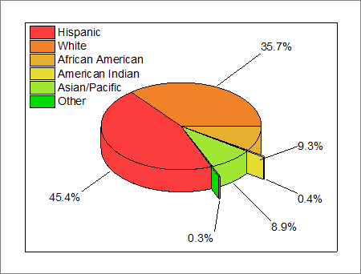
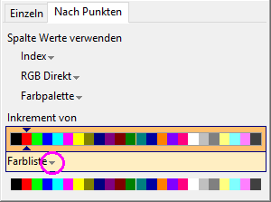
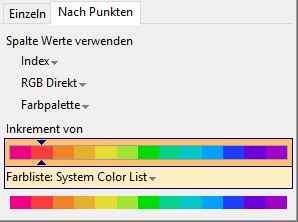
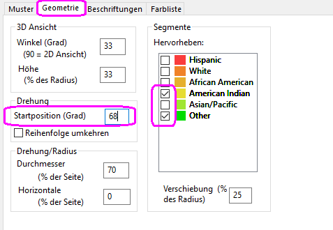
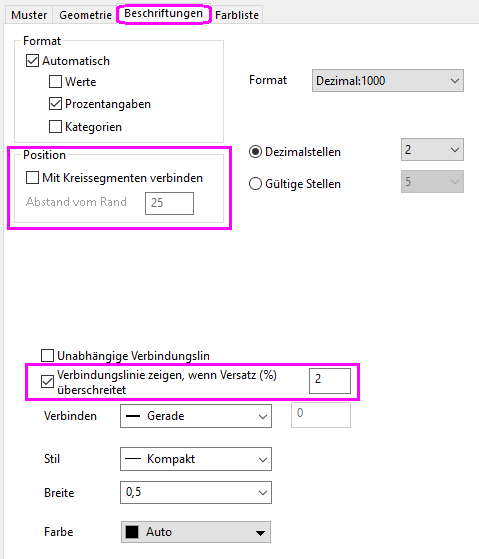

3D-Kreisdiagramm
3D-Pie-Chart
Zusammenfassung
Mit dem 3D-Kreisdiagramm von Origin können Sie das Aussehen des Diagramms bestimmen. Legen Sie die Größe der Kreissegmente, Verschiebung, Ansichtswinkel, Größe und Drehung des Diagramms fest. Sie können ein oder mehrere Kreissegmente auseinander gezogen anzeigen.
- 
Was Sie lernen werden
- Ein 3D-Kreisdiagramm erstellen und den Ansichtswinkel ändern
- Den Ansichtswinkel des Kreisdiagramms ändern
- Die Kreissegmente in der Anzeige auseinanderziehen
- Kreissegmente beschriften, Verbindungslinien hinzufügen und Beschriftungen durch Ziehen neupositionieren.
Schritte
Sie können dieses Diagramm auch im Lernzentrum finden. (Wählen Sie Hilfe: Lernzentrum im Menü oder drücken Sie die Taste F11. Öffnen Sie dann Diagrammbeispiel: Statistikdiagramme.)
- Importieren Sie die Daten \Samples\Graphing\3D Pie Chart.dat in das Arbeitsblatt und benennen Sie die Spaltenlangnamen in Demographic und Percent um.
- Markieren Sie die 2. Spalte und erstellen Sie ein 3D-Kreisdiagramm über Zeichnen: Einfache 2D: 3D-Kreisdiagramm Farbe.
- Klicken Sie doppelt auf das Diagramm, um das Dialogfeld Details Zeichnung zu öffnen. Klicken Sie auf der Registerkarte Muster in der Gruppe Füllen auf die Auswahlliste Farbe und dann auf die Registerkarte Nach Punkten der Farbauswahl. Klicken Sie auf die Auswahlliste Farbliste.
- 
- Wählen Sie die Systemfarbliste, verschieben Sie dann den Schieber von Inkrement von zur richtigen Farbposition und klicken Sie dann auf Anwenden.
- 
- Klicken Sie auf die Registerkarte Geometrie und duplizieren Sie die folgenden Einstellungen:
- 
- Klicken Sie auf die Registerkarte Beschriftungen und deaktivieren Sie auf der Registerkarte Position das Kontrollkästchen Mit Kreissegmenten verbinden. Aktivieren Sie Verbindungslinie zeigen, wenn Versatz (%) überschreitet und geben Sie einen Versatz von 2 ein.
- 
- Klicken Sie auf OK, um den Dialog Details Zeichnung zu schließen. Ziehen Sie die Diagrammlegende auf die linke Seite des Kreises. Ziehen Sie mit dem Cursor an den Beschriftungen der Kreissegmenten, um sie neu zu positionieren. Beachten Sie, dass die Verbindungslinie den Beschriftungen folgt. Das Diagramm sollte nun folgendermaßen aussehen:
-